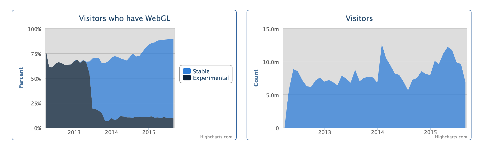
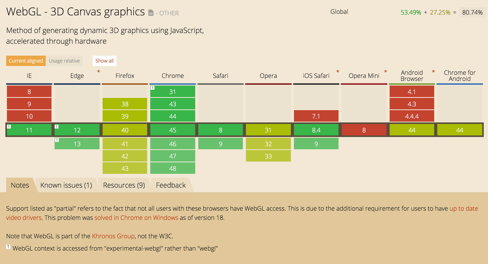
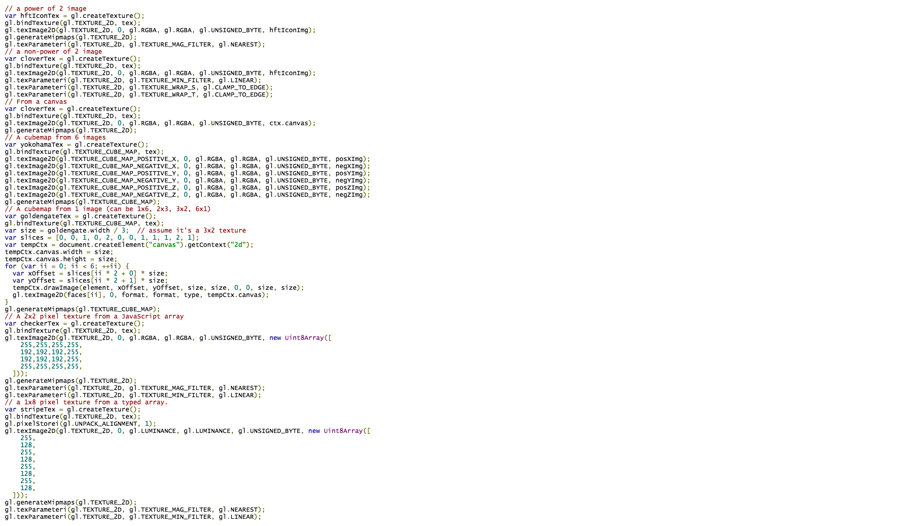

WebGL
WebGL
WebGL is a Javascript API for rendering interactive 3D computer graphics and 2D graphics within any compatible web browser without the use of plug-ins. It is designed and maintained by Khronos Group.

webglstats.com

caniuse.com
Try yours: get.webgl.org
| There are |
| >1 billion |
| devices that support WebGL. |
WebGL Javascript API ...
... is very verbose

WebGL Libraries
three.js (threejs.org)
sceneJS (scenejs.org)
Babylon.js (babylonjs.com)
CopperLicht (ambiera.com/copperlicht)
TWGL (twgljs.org)
... and more
three.js
Technical dive-in
Three steps up and running
var renderer = new THREE.WebGLRenderer(); var width = window.innerWidth; var height = window.innerHeight; renderer.setSize( width, height ); document.body.appendChild( renderer.domElement );
Setup render context
var scene = new THREE.Scene();
var geometry = new THREE.SphereGeometry( 1, 32, 32 );
var material = new THREE.MeshBasicMaterial( { color: 0xd5631d } );
var object = new THREE.Mesh( geometry, material );
scene.add( object );
var camera = new THREE.PerspectiveCamera( 55, width / height, 1, 1000 );
camera.position.z = 3;
Create geometry and camera
function draw () {
window.requestAnimationFrame( draw );
renderer.render( scene, camera );
}
draw();
Start rendering
var light = new THREE.PointLight( 0xffffff, 1 ); light.position.set( 10, 10, 10 ); scene.add( light );
var material = new THREE.MeshPhongMaterial( { color: 0xd5631d } );
Light up the world
THREE.ImageUtils.loadTexture(
'img/mars_1k_color.jpg',
THREE.UVMapping,
function ( texture ) {
var geometry = new THREE.SphereGeometry( 1, 32, 32 );
var material = new THREE.MeshLambertMaterial( { map: texture } );
var object = new THREE.Mesh( geometry, material );
scene.add( object );
});
Apply texture mapping